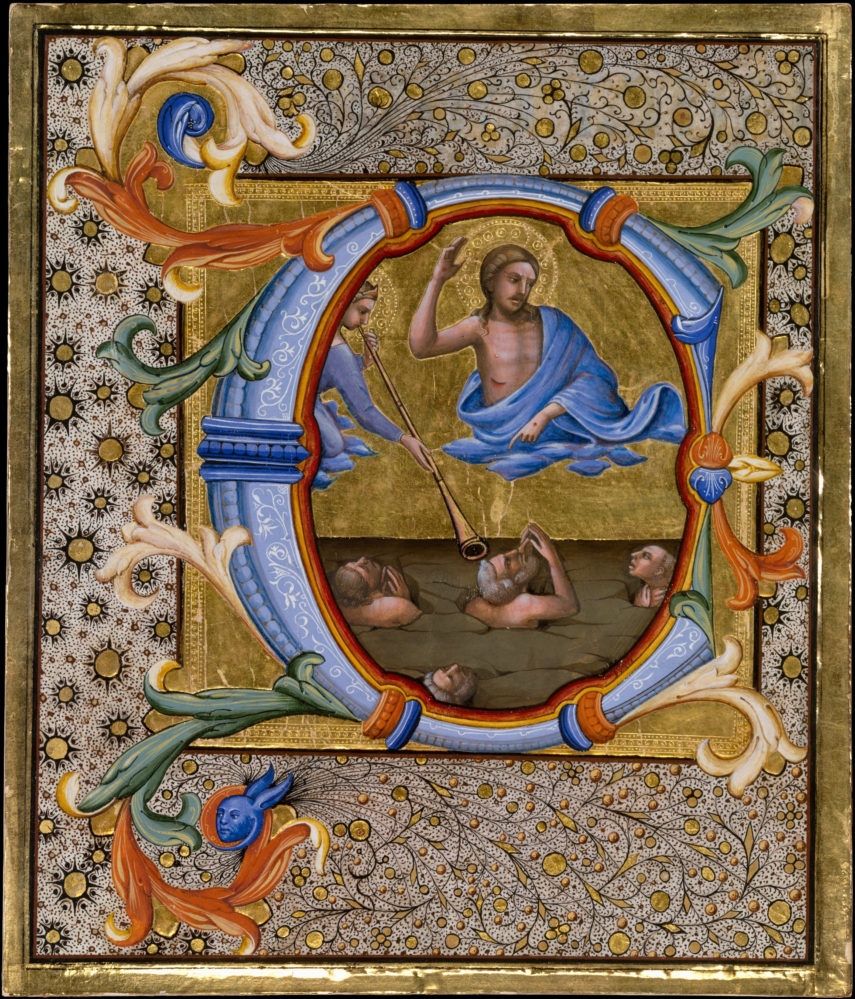

Mateus 25:41-46: o inferno é castigo eterno ou aniquilação?
Jesus pôs lado a lado o tormento eterno e a vida eterna. Para nós, os dois duram para sempre; os adventistas leem destruição definitiva.

Jesus pôs lado a lado o tormento eterno e a vida eterna. Para nós, os dois duram para sempre; os adventistas leem destruição definitiva.

"E irão estes para o tormento eterno, mas os justos para a vida eterna." As Lições Bíblicas da CPAD e a Declaração de Fé das Assembleias de Deus ensinam que o castigo dos ímpios é eterno e consciente. Teólogos adventistas defendem que os ímpios serão destruídos e deixarão de existir, e que o eterno está no efeito do juízo. Mostramos os dois lados, o que eles têm em comum, e dizemos onde estamos.
E irão estes para o tormento eterno, mas os justos para a vida eterna.Mateus 25:46 · Almeida Corrigida Fiel (ACF), © Sociedade Bíblica Trinitariana do Brasil, citação curta
Mateus 25:31-46 fecha o sermão profético. O Filho do Homem se assenta no trono da sua glória e separa as nações como o pastor separa as ovelhas dos bodes. O critério que aparece é o cuidado com os pequeninos: o que se fez a eles se fez a Cristo.
As duas palavras-chave do versículo 46 são kolasis, castigo ou tormento, e aiōnios, eterno. O léxico de Thayer, no Bible Hub, dá a kolasis o sentido de correção, punição, pena, citando Mateus 25:46, e põe esse castigo entre os usos de aiōnios no sentido de sem fim, que nunca cessará, como ideia oposta à vida eterna. O verbete HELPS lê aiōnios pela qualidade da era que vem, não só pela duração. É esse o ponto em que os lados se separam.
Matthew Henry, comentarista inglês do século 18, escreveu sobre o versículo 46 que o castigo dos ímpios no estado futuro será eterno, porque esse estado é inalterável (tradução livre).
O texto fecha o sermão profético de Jesus (Mateus 24-25) com o julgamento das nações, separadas como ovelhas e bodes (25:31-33). A segunda metade da cena, a dos que estão à esquerda, termina num versículo que põe lado a lado o tormento eterno e a vida eterna. O debate é sobre o que eterno quer dizer no primeiro caso.
O tormento eterno de Mateus 25:46 é um castigo consciente que nunca termina, ou é uma destruição definitiva, eterna nos seus efeitos?
O inferno é um lugar real, preparado para o diabo e os seus anjos, para onde vão os que rejeitam a Cristo. Jesus usa a mesma palavra para o castigo e para a vida: se a vida dos justos não termina, o castigo dos ímpios também não. A segunda morte é separação definitiva e eterna de Deus, num lago de fogo que jamais terá fim.
Osiel Gomes, numa lição cuja leitura em classe é Mateus 25:41-46, diz que o inferno é um lugar real, preparado para o diabo e não para o homem, e que vai para lá quem escolhe viver em rebelião. O castigo é eterno, como mostram o fogo inextinguível e o lago de fogo. Ele aplica o versículo 46 aos dois destinos e rejeita o universalismo e a ideia de inferno provisório.
Então, o castigo eterno se configura como uma penalidade aos que se rebelaram contra Deus e sua Palavra."A carreira que nos está proposta", Lições Bíblicas CPAD, 2º trimestre de 2024, lição 11, "A realidade bíblica do Inferno" (reproduzida no site Estudantes da Bíblia) (16/06/2024)
Claudionor de Andrade diz que o horror da segunda morte não está só no lago de fogo, mas na separação definitiva e eterna de Deus. O inferno não é um estado de espírito: é um lugar real, e o castigo jamais terá fim. Quando lê que a morte e o inferno serão lançados no lago de fogo, ele aplica a ideia de aniquilar às maldições, não aos ímpios.
É um castigo real num lugar real. Jamais terá fim."As Sete Cartas do Apocalipse", Lições Bíblicas CPAD, 2º trimestre de 2012, lição 12, "O Juízo Final" (reproduzida no site Estudantes da Bíblia) (17/06/2012)
A alma não é imortal por natureza; a vida eterna é dom dado aos salvos. O fogo é chamado eterno pela origem divina e pelo efeito definitivo, como o fogo de Sodoma (Judas 7), que parou quando nada mais restava. O ímpio é consumido, sem raiz nem ramo (Malaquias 4:1). Assim o pecado e o sofrimento terminam, e o universo é restaurado.
José Miranda Rocha explica que os adventistas ensinam a aniquilação dos ímpios como juízo coerente com a justiça e a bondade de Deus. A segunda morte é permanente, mas extingue o ímpio. O eterno descreve a origem e o efeito do fogo, como em Sodoma e Gomorra, e Apocalipse 20:9 diz que o fogo os devorou. Ele também rejeita a salvação universal.
A imagem de um fogo ardendo eternamente para atormentar os ímpios é estranha ao texto e à teologia bíblica."O tormento dos ímpios e o sofrimento de Cristo", Kerygma – Revista Eletrônica de Teologia, ano 3, n.º 2, pp. 41-54 (Unasp) (2º semestre de 2007)
Emilson dos Reis critica a ideia, que atribui aos filósofos gregos, de que a alma é imortal. Se os ímpios ardessem para sempre, escreve, o pecado e o sofrimento nunca teriam fim e o universo nunca seria restaurado. Na visão adventista, Satanás, os seus anjos e os que recusaram a salvação são destruídos, e o problema do mal é resolvido. O artigo não faz exegese de Mateus 25.
Satanás, seus anjos e todos aqueles que recusaram a salvação que lhes foi oferecida serão destruídos e deixarão de existir."Panorama do fim" (Revista Adventista, Casa Publicadora Brasileira) (setembro de 2023)
Ficamos com o castigo eterno, e a razão está no próprio versículo. Jesus usa a mesma palavra, eterno, para o destino dos ímpios e para o dos justos. Se a vida eterna não termina, não há como ler o tormento eterno como algo que acaba. Apocalipse 20:10 confirma: "de dia e de noite serão atormentados para todo o sempre".
É o que ensina a Declaração de Fé das Assembleias de Deus: "O destino dos incrédulos é a condenação eterna no Inferno." E ainda: "Esse é o castigo eterno, também chamado de “fogo que nunca se apagará”." Já no resumo da fé, ela fala da "eternidade de tristeza e tormento para os infiéis e vida eterna de gozo e felicidade para os fiéis de todos os tempos".
Respeitamos os irmãos que leem diferente e reconhecemos o que eles querem proteger: a justiça e a bondade de Deus. Mas a bondade de Deus está justamente em ter preparado o fogo para o diabo, e não para o homem, e em oferecer a todos a vida eterna em Cristo. Por isso o anúncio é urgente.
Posição O Paladino · linha editorial pentecostal
A sentença começa com separação de Cristo (25:41).
O fogo eterno foi preparado "para o diabo e seus anjos" (25:41).
O que se deixou de fazer a eles, se deixou de fazer a Cristo (25:45).
"E irão estes para o tormento eterno" (25:46).
A mesma palavra descreve o destino dos justos (25:46).
O mesmo Jesus que fala do castigo convida todos ao arrependimento. O alvo do aviso é salvar.
Os adventistas creem no juízo, na segunda morte e na salvação só em Cristo. A divergência é séria, mas é de interpretação.
A cena julga o amor aos pequeninos. Debater a duração do castigo não pode apagar isso.
Antes de discutir a duração do castigo, repare no motivo da sentença: pessoas que não deram comida, água, abrigo e visita a quem precisava. Jesus mede a fé pelo amor concreto aos pequeninos.
E leve o assunto a sério. Todos os lados concordam que a sentença é definitiva. Se há alguém perto de você que ainda não conhece a Cristo, ore por essa pessoa e fale com ela. O fogo foi preparado para o diabo, não para o homem.
Dica: Leia o versículo 46 duas vezes, uma pensando na vida eterna e outra no tormento eterno. Pergunte: Jesus usaria a mesma palavra com sentidos diferentes na mesma frase? Depois leia como cada lado responde.
O texto conversa com Daniel 12:2, Marcos 9:43-48, 2 Tessalonicenses 1:9, Judas 7, Apocalipse 14:11, Apocalipse 20:10-15, Malaquias 4:1 e João 3:16-18.
A ACF traz "tormento eterno" (25:46); outras versões dizem castigo eterno. A palavra grega kolasis significa castigo, punição. "Eterno" traduz aiōnios, a mesma palavra de "vida eterna" no fim do versículo.
Os dois lados levam a sério o juízo de Deus e a sentença definitiva. Para nós, Jesus pôs o tormento eterno e a vida eterna na mesma balança, e por isso cremos que os dois duram para sempre. É um motivo a mais para anunciar hoje a salvação que está em Cristo.
Conhece alguém que vai gostar?
Mande este estudo para o seu grupo.
Fale com o editor
Wan Anderson Pelicioni de Castro, editor responsável. Sugestão de pauta, correção ou conversa: mande mensagem no Instagram.
Consulta às fontes em 10/11/2026.
Pesquisa nas fontes listadas e redação feitas com apoio de inteligência artificial. Citações literais conferidas no texto das páginas citadas. As lições da CPAD foram lidas na reprodução do site Estudantes da Bíblia; os auxílios de outras obras reproduzidos nelas não foram atribuídos aos comentaristas. A iluminura mostra o Juízo Final, com Cristo e a ressurreição dos mortos. Linha editorial pentecostal adotada pelo portal em 30/10/2026.